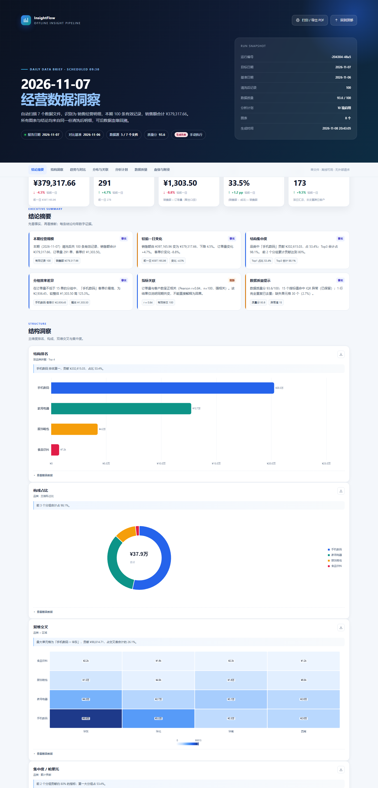

0. 先看这里：3 分钟跑通
第一次使用，按下面 5 步做；示例数据是合成的，不会接触你的真实业务。
cd C:\你的路径\insightflow
python --version
python -m pip install -r requirements.txt会生成演示数据、执行完整流水线，并输出报告。
双击 output\latest.html，或执行下面命令。
.\run.ps1 demo --date 2026-11-07
start output\latest.htmlrun.bat demo --date 2026-11-07。Set-ExecutionPolicy -Scope Process Bypassoutput\latest.html。1. 原理介绍：它到底做了什么
你可以把它理解成一条“数据流水线”，每一步都有记录，出错也不会把整批数据弄坏。
三个最重要的概念
| 概念 | 什么意思 | 例子 |
|---|---|---|
| 报告日 | 这次报告分析哪一天。默认是“运行日的前一天”。 | 11 月 8 日 09:30 运行 → 分析 11 月 7 日 |
| 基准日 | 用来做环比的前一天；没有基准就不显示环比，不会硬造。 | 报告日 11-07 → 基准日 11-06 |
| 数据源 | 你指定的本地文件夹。工具只读，不会修改原文件。 | D:\每日数据\销售导出 |
找最新一天的数据、识别字段、清洗、算 KPI、做结构/趋势/分布/相关性分析、生成图表和文字结论。
不会上传数据、不会改你的源文件、不会猜缺失日期、不会把“2026-11”月数据当成日数据，也不会替代你的业务判断。
--date YYYY-MM-DD 指定。2. 第一次准备
只需要做一次。以后每天就是放文件、看报告。
2.1 安装 Python
- 打开
python.org，下载 Python 3.10 或更高版本。 - 安装时勾选 Add python.exe to PATH。
- 打开 PowerShell，输入
python --version，能看到版本号就成功。
2.2 安装依赖
在 insightflow 文件夹里打开终端，执行：
python -m pip install -r requirements.txt看到 Successfully installed ... 即可。第一次会下载 pandas 等包，需要几分钟。
2.3 认识文件夹
| 文件夹 | 用途 | 你要不要动 |
|---|---|---|
config\config.json | 数据源、输出、定时时间等配置 | 要改数据源时动它 |
examples\raw\ | 演示数据源（默认） | 第一次体验不用动 |
output\ | 报告和 JSON/CSV 产物 | 看报告时打开 |
logs\ | 每次运行日志 | 排障时看 |
state\ | 锁、幂等索引、任务状态 | 不要手动改 |
3. 导入数据
不用把文件“上传”到任何地方；只要让工具知道你的文件夹在哪。
3.1 配置数据源
- 用记事本打开
config\config.json。 - 找到
"source_dir"，改成你的数据文件夹。 - 保存（建议 UTF-8），重新运行。
{
"source_dir": "D:/每日数据/销售导出",
"output_dir": "output",
"schedule_time": "09:30",
"recursive_scan": true
}D:/每日数据/销售导出；如果用反斜杠，JSON 里要写成双反斜杠 D:\\每日数据\\销售导出。路径有空格也可以，但要用引号包住。recursive_scan 为 true 时会扫描子文件夹；如果只想扫当前文件夹，改成 false。
3.2 放文件
- 支持 .xlsx、.xls、.csv；可以一次放多个文件，也可以按天累积。
- CSV 的 UTF-8、UTF-8 BOM、GBK、GB18030 会自动识别，通常不需要手动转编码；.xls 依赖
xlrd，安装依赖时已包含。 - 文件名没有强制要求，例如
销售明细_2026-11-07.xlsx、导出.csv都可以。 - 运行前请关闭 Excel/WPS，避免文件被占用。
- 一个工作簿可以有多个 Sheet；没有日期的封面/说明 Sheet 会自动跳过，但最好只保留明细 Sheet。
- 默认单文件上限 50 MB、20 万行；特别大的文件建议先拆分。
.\run.ps1 scan --date 2026-11-07 会显示每个文件命中了多少行、用了哪一列日期，不写报告，适合先检查数据有没有放对。4. 数据规范
不需要把数据做得完美，但下面这些会直接影响识别结果。满足“最低可用”就能出报告。
4.1 最低可用数据
| 内容 | 是否必须 | 要求 |
|---|---|---|
| 日期列 | 必须 | 能解析到“天”，且包含报告日。例如 订单日期。 |
| 指标列 | 强烈建议 | 数值列，例如销售额、订单量、客户数、成本。没有指标时只能做频次和质量分析。 |
| 维度列 | 强烈建议 | 分类列，例如区域、品类、渠道。没有维度时只能看总体 KPI。 |
| ID 列 | 可选 | 订单号、客户ID；用于追溯和去重辅助。 |
最简单的正确示例
订单日期,区域,品类,渠道,销售额,订单量,成本
2026-11-07,华东,手机数码,线上,12800.50,3,9000
2026-11-07,华南,家用电器,线下,7600.00,2,5100
2026-11-07,华北,服饰鞋包,线上,980.00,5,520这一张表已经足够生成：KPI、品类/区域排名、占比、分布、相关性、数据质量等分析。
4.2 日期怎么写
以下写法都能识别：
2026-11-07、2026/11/7、2026.11.07、2026年11月7日、20261107；Excel 日期格式也可以。
2026-11（只有月份）、11/7（缺年份）、上周、昨天。日粒度分析必须有完整日期。
列名建议使用：日期、订单日期、业务日期、交易日期、统计日期、date、order_date。其他名字也可能被识别，但用这些最稳。
03/04/2026 默认按“日/月/年”解析为 2026-03-04。如果源系统是美式“月/日/年”，请先转成 YYYY-MM-DD，避免数据归错期。4.3 指标怎么写
- 指标单元格必须是数字，不要写“约 1 万”“三单”“待确认”。
- 支持千分位、货币符号和单位：
1,234.50、¥1,234.50、1.2万、3.5亿、12.5%。 - 推荐列名：
销售额、销售金额、营收、收入、订单量、订单数、客户数、新增客户数、成本、利润。 - 单位可以写在表头，例如
销售额(万元)；这时单元格写12.5就表示 12.5 万，工具会自动换算成元。 - 毛利率、利润率、占比、平均这类“不可相加”的列不会被当成金额求和，避免把百分比加成一个巨大的数。
(万元)，单元格就不要再写 12.5万；两者只选一种，否则可能重复换算。4.4 维度怎么写
- 推荐列名：
区域、品类、渠道、门店、商品、品牌、销售员、省份、城市。 - 一个维度最好有 2–50 个不同取值；几百上千个 SKU 不适合直接做占比图，工具会优先选择更适合的维度。
- 同一列里不要混用“华东”“华东区”“东部”这类口径；工具会尝试归一，但统一写法最稳。
4.5 常见错误写法（重点）
| 错误 | 为什么不行 | 怎么改 |
|---|---|---|
| 明细表里夹着“合计/小计”行 | 会被当成一条正常记录，金额和订单量被重复计算 | 删除合计行，或把合计放到单独 Sheet |
| 两行表头 / 合并单元格 | 工具只能选一行作为表头，合并单元格会产生空列名 | 改成一行表头，取消合并，补全每个列名 |
| 标题行在表头上面 | 可能被误判成表头；工具会扫描前 20 行，但不保证 | 删除标题行，让第一行就是列名 |
| 日期是“2026-11” | 只有月份，无法按天筛选 | 导出日粒度日期，或补成具体某天 |
| 金额是文本“约 1 万” | 无法可靠转成数字，可能被填 0 或缺失 | 改成 10000 |
| 密码保护 / 损坏的文件 | 读取失败，但不会影响其他文件 | 解除密码，用 Excel 另存为正常 xlsx |
4.6 多文件、多 Sheet 会怎么处理
- 所有命中报告日的表会合并分析；不同文件名不影响。
- 列名不同但语义相同（销售额 / 销售金额 / revenue）会尝试对齐。
- 完全重复的行会去重，保留第一次出现；只是“看起来像”的重复不会随便删。
- 没有日期列的表（封面、说明、汇总）会跳过；如果你确认某张表有数据但没被读取，先看
scan输出。
5. 运行
日常只需要一条命令；所有命令都在 insightflow 文件夹里执行。
| 你想做什么 | 命令 |
|---|---|
| 分析昨天（默认） | .\run.ps1 run |
| 分析指定日期 | .\run.ps1 run --date 2026-11-07 |
| 强制重算（同一天、同一批文件） | .\run.ps1 run --date 2026-11-07 --force |
| 临时换数据源 | .\run.ps1 run --date 2026-11-07 --source "D:\临时导出" |
| 只预览，不生成报告 | .\run.ps1 scan --date 2026-11-07 |
| 生成演示数据并跑 | .\run.ps1 demo --date 2026-11-07 |
| 看最近运行记录 | .\run.ps1 logs --limit 10 |
skipped，不会重复写一份一样的报告。确实要重算时加 --force。运行结果怎么读
| 状态 | 含义 | 你要做什么 |
|---|---|---|
| success | 成功生成报告 | 打开 output\latest.html |
| no_data | 文件读到了，但没有目标日的数据 | 检查日期列、目标日、文件是否放对 |
| skipped | 数据没变化，复用已有报告；或另一个任务正在跑 | 看原因；要重算加 --force |
| failed | 没有成功读取任何表 / 清洗后为空 / 报告渲染失败 | 看 logs\latest_run.json 的 failure_reason |
6. 输出在哪
所有产物都在项目文件夹里；不需要服务器，也不需要联网。
6.1 报告文件
| 路径 | 说明 |
|---|---|
output\latest.html | 永远是最新报告，日常直接双击这个 |
output\2026-11-07\InsightFlow_2026-11-07_<run_id>.html | 按天归档的历史报告，可保留、打印、发送 |
output\2026-11-07\analysis_plan.json | 本次分析计划：主指标、主维度、启用了哪些图、为什么跳过 |
output\2026-11-07\metrics.json | KPI、总量、基准、相关性、质量分等机器可读指标 |
output\2026-11-07\cleaned_data.csv | 清洗后的明细，可用 Excel 打开复核 |
output\2026-11-07\run_record.json | 本次运行记录摘要 |

报告怎么读
- 结论摘要：先看 3–6 条带数字的结论；“事实”和“推断”分开标注。
- KPI：本期规模、订单、客单价、毛利率、客户数，以及较前一日变化。
- 结构 / 趋势 / 分布：排名、占比、Pareto、热力图、分时走势、日环比、直方图、相关性。
- 分析计划：为什么选这个指标/维度，哪些分析被跳过。
- 数据质量：缺失、重复、异常值、解析质量、兼容性提示。
- 数据血缘与附录：源文件、字段映射、Top 10 明细、异常清单、运行步骤。
报告右上角可以“打印 / 导出 PDF”；每张图右上角可以“下载 PNG”。报告是单文件，发给别人时只需发这个 HTML。
6.2 日志在哪
| 路径 | 用途 |
|---|---|
logs\latest_run.json | 最近一次运行的完整记录；排障先看这个 |
logs\runs\<run_id>.json | 每次运行一个快照 |
logs\runs.jsonl | 每次触发追加一行，适合检索历史 |
logs\insightflow.log | 轮转文本日志，记录读取、警告、错误堆栈 |
logs\scheduler_console.log | 定时任务入口的执行摘要（UTF-8） |
state\index.json | 幂等索引，不要手动改 |
最常用的查看方式：.\run.ps1 logs --limit 10。如果要看某次失败原因，打开 logs\latest_run.json，搜索 failure_reason 和 warnings。
7. 定时任务
定时任务的职责只有一句话：每天 09:30 执行一次 run --trigger scheduled。
InsightFlow_Daily_0930，下次运行 2026-11-09 09:30，最近一次结果 0（成功）。换电脑或移动项目文件夹后，需要重新安装。7.1 查看 / 安装 / 卸载
# 查看状态
.\run.ps1 schedule status
# 安装（默认 09:30）
.\run.ps1 schedule install
# 改时间（例如 08:45），会覆盖同名任务
.\run.ps1 schedule install --time 08:45
# 只预览任务 XML，不写入系统
.\run.ps1 schedule install --dry-run
# 卸载
.\run.ps1 schedule uninstall也可以在 Windows 的“任务计划程序”（taskschd.msc）→“任务计划程序库”里看到 InsightFlow_Daily_0930。
7.2 定时任务的 4 个前提
- 电脑在 09:30 处于开机、已登录状态（任务是当前用户交互式运行）。
- 数据源文件夹在 09:30 前已经有“前一日”的完整数据。
- 项目文件夹没有被移动；移动后要重新执行
schedule install。 - 没有另一个 InsightFlow 正在运行；文件锁会阻止并发。
StartWhenAvailable，恢复后可能补跑；内置 daemon 也有补跑窗口。具体是否补跑取决于系统电源策略，最稳的做法仍是保持 09:30 前开机。7.3 没有 Windows 计划任务权限
可以改用内置 daemon（需要保持终端窗口运行）：
.\run.ps1 schedule daemon它会在每天 09:30 触发；休眠恢复后在宽限期内补跑，失败后 5 分钟重试。按 Ctrl+C 停止。
8. 出错排障
先不要改数据。按“状态 → 日志 → 预览 → 修复”的顺序，绝大多数问题 2 分钟能定位。
8.1 先看四种状态
| 状态 | 大概率原因 | 先做什么 |
|---|---|---|
| success | 一切正常 | 打开 output\latest.html |
| no_data | 没有目标日期的数据；日期列没识别；文件没放对 | .\run.ps1 scan --date 2026-11-07 |
| skipped | 数据指纹没变；或另一个任务正在跑 | 看原因；要重算加 --force |
| failed | 文件全坏/为空；清洗后为空；报告渲染失败 | 看 logs\latest_run.json 的 failure_reason |
8.2 排障四步法
状态、目标日期、读取文件数、失败原因都在最后几行。
搜索 failure_reason、warnings、files[].status。
确认文件被读到、目标日命中行数、日期列是否正确。
先改日期/列名/文件，再重跑；不要一次改很多地方。
8.3 常见问题
Q1：输入 python 提示“不是内部或外部命令”
Python 没装好，或安装时没勾选 PATH。重新安装并勾选 Add python.exe to PATH；安装后关闭并重新打开终端。也可以试 py --version。
Q2：.\run.ps1 提示“禁止运行脚本”
执行 Set-ExecutionPolicy -Scope Process Bypass，只对当前 PowerShell 窗口生效。或者直接用 run.bat run --date 2026-11-07。
Q3：提示 ModuleNotFoundError: No module named pandas
依赖没装。确认在 insightflow 文件夹里执行 python -m pip install -r requirements.txt。如果你用了虚拟环境，先激活虚拟环境。
Q4：状态是 no_data，但文件里明明有数据
按顺序检查：① 报告日是不是“运行日的昨天”；② 日期列是不是真正的日粒度（不是“2026-11”）；③ 日期是不是在目标日；④ 文件是否放在 source_dir；⑤ 文件是否被 Excel 占用。
用 .\run.ps1 scan --date 你的日期 看“目标”列是否大于 0。
Q5：failed，原因“没有成功读取任何数据表”
所有文件都为空、损坏、加密或格式不对。先单独用 Excel 打开文件；能打开就“另存为 .xlsx”；不能打开就重新导出。空的 CSV、0 字节文件、改了后缀的假 Excel 都会失败。
Q6：提示找不到日期列 / 字段识别不对
把日期列改名为 日期 或 订单日期；确保第一行是表头、没有合并单元格、没有两行表头；日期值要是完整日期。改完先跑 scan 看“日期列”和“目标行”。
Q7：数字列被识别成文本 / 缺失很多
检查单元格是不是“文本格式的数字”，或写了“约 1 万”“三单”。改成纯数字；用 Excel 的“分列/转换为数字”处理后再导出。清洗会用中位数填补缺失，但填得太多会影响结论。
Q8：金额差了 10000 倍
检查表头单位。销售额(万元) 表示单元格是万元，工具会乘 10000；如果单元格又写 12.5万，就重复了。两者只保留一种。
Q9：图表很少，或没有某个图
不是所有数据都适合所有图。看报告“分析计划”的“跳过原因”：可能样本太少、主维度分组不足 4 个、没有前一日基准、没有时间字段，或图表数量达到上限 8 个。数据量足够时会自动增加。
Q10：报告打不开 / 图表空白
确认文件完整、大小约 1 MB 以上；用 Edge 或 Chrome 打开；启用 JavaScript。图表空白时，展开每张图下方的“查看图表数据”，表格仍然可用。不要把 HTML 当文本编辑器打开。
Q11：定时任务没有在 09:30 跑
执行 .\run.ps1 schedule status，确认任务存在且“Next Run Time”正确；确认电脑开机且用户已登录；确认项目文件夹没被移动；看 logs\scheduler_console.log 和 logs\insightflow.log。移动过文件夹就重新 schedule install。
Q12：任务跑了，但报告没更新
看状态是不是 skipped。如果源文件内容/大小/修改时间没有变化，工具会复用报告；确实要重算就执行 .\run.ps1 run --date 你的日期 --force。
Q13：提示“另一个运行正在执行”
说明有另一次运行持有 state\.pipeline.lock。等它结束；如果确认没有进程在跑（例如电脑异常关机），等 150 分钟自动过期，或手动删除该锁文件后再运行。
Q14：数据重复 / 金额翻倍
先检查明细表里是否混入“合计/小计”行；再检查是否同时放了“明细文件”和“汇总文件”。工具只去重“完全相同的行”，不会把业务上相似的行随便删掉。
Q15：Excel 文件被占用 / 读取失败
关闭 Excel/WPS 再跑；确认文件不在 OneDrive 的“仅在线”状态；确认没有密码保护。网络盘/同步盘写入过程中也可能读不到，等同步完成。
8.4 要求助时，提供这 5 样
- 运行编号
run_id； - 目标日期
target_date； - 状态与
failure_reason； logs\latest_run.json或logs\runs\<run_id>.json；- 源文件前 3 行截图（脱敏）+ 文件类型/编码。
8.5 不要做这些事
- 不要手动改
state\index.json；要重算用--force。 - 不要在运行中删除
.pipeline.lock；等运行结束或确认进程已退出。 - 不要在明细表里保留合计行、合并单元格、两行表头。
- 不要把“2026-11”这种月数据当日报数据。
- 不要把报告 HTML 当源数据再放回数据源目录。
9. 名词表与每日清单
9.1 名词表
| 名词 | 解释 |
|---|---|
| 数据源 | 你指定的本地文件夹，里面放 Excel/CSV。 |
| 字段 | 表格的一列，例如“销售额”。 |
| 指标 | 可求和的数值列，例如销售额、订单量、成本。 |
| 维度 | 用于分组的分类列，例如区域、品类、渠道。 |
| 报告日 | 本次分析的目标日期，默认是运行前一天。 |
| 基准日 | 报告日的前一天，用于环比；没有就不显示。 |
| 清洗 | 去重、补缺失、统一日期/文本、标记异常值。 |
| 数据指纹 | 根据文件路径/大小/修改时间算出的标识，用来判断“数据有没有变”。 |
| 幂等 | 同一批数据重复跑，不会重复生成多份相同报告。 |
| 质量分 | 0–100 的启发式评分，综合完整度、重复、异常、解析质量；不是统计认证。 |
9.2 每天 5 步清单
把前一日导出文件放进 source_dir，关闭 Excel。
定时任务自动跑；或手动执行 .\run.ps1 run。
确认是 success；如果是 no_data，先跑 scan。
打开 output\latest.html，先看结论和质量提示。
需要时打印 PDF 或发送 HTML；敏感数据先脱敏。
9.3 一句话总结
output\latest.html。遇到问题先看状态和 logs\latest_run.json。